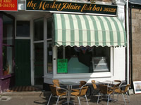
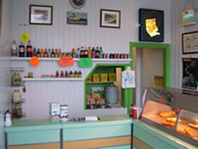
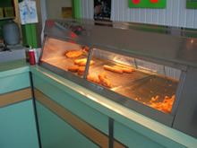

Market Plaice Fish Bar has been serving the wider Penzance community for over 50 years.
We use locally sourced potato's, freshly cut and fried in 100% vegetable oils. Couple this with the finest fillets of fish the north Atlantic ocean has to offer, and you are assured a quality and reasonably priced meal every single time.
Market Plaice offers table and chair seating outside the premises, perfect for enjoying lunch with friends on those beautiful British summer days. After which, why not take a stroll around the historic streets of Penzance, taking in the some of the best sights and sunshine Cornwall has to offer. Should you wish to take your food home, there are two car parks and ample roadside parking within 50 yards of the shop.
Feeling adventurous? Fancy something other than the usual battered fish? Why not try our tasty lemon peppered cod. Cooked in a lightly spiced lemon coating, it's sure to tickle your taste buds. Not your thing either? We also offer locally sourced southern fried chicken, and a variety of vegetarian foods.
Whatever your taste, your sure to find something to quiet your stomach growling.
Open Monday to Saturday, 11.15am to 8pm
Telephone & Pre-orders welcomed
|  |  |